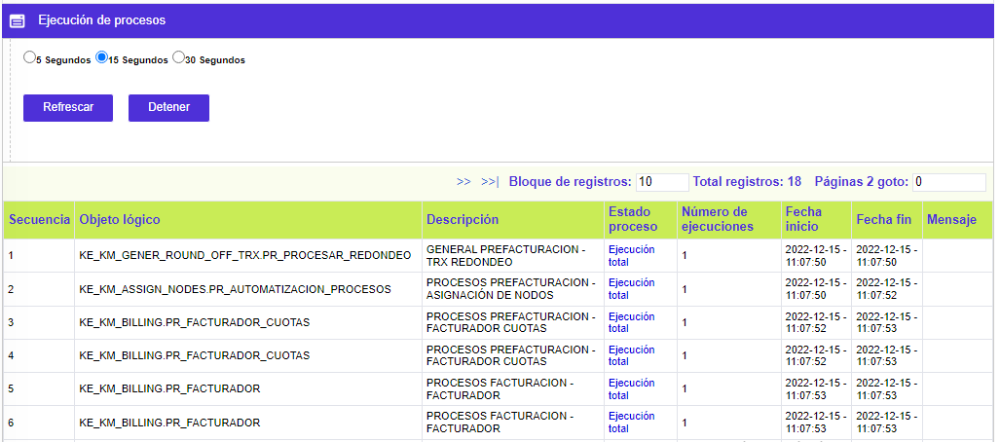
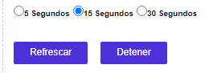

|
Ejecución grupos independientes |
Esta opción muestra todos aquellos grupos que no hayan sido marcados en el campo Obligatorio de la opción Definición grupos de procesos. Esto significa que todos aquellos que si hayan sido marcado como obligatorios sólo se mostrarán en la opción Ejecución grupos en malla.
Con base en lo anterior, esta opción sólo nos mostrará los procesos a ser ejecutados manualmente, permitiendo a los usuarios hacerlo no solo una vez sino las que sea necesario de acuerdo a las necesidades del cliente.
La pantalla principal se divide en dos partes en la cuales se encontrarán los Grupos de procesos a la izquierda, tal como se muestra en la siguiente imagen.
Por otro lado , la opción cuenta también con el vínculo de Procesos que nos permitirá ejecutar uno a uno aquellos que necesitemos, sin ser necesario correr todo el grupo de procesos.

A la derecha de esta pantalla se ubica una ventana que funciona como log de operaciones, describiendo las acciones y resultados de cada uno de los procesos que han sido ejecutados.

A través de esta pantalla principal, el usuario puede decidir ejecutar todos los procesos pertenecientes al grupo que haya seleccionado , al usar el botón Ejecutar. De esta forma el sistema tomará todos aquellos procesos y los ejecutará de acuerdo a la parametrización de precedentes realizada a través de la opción Definición grupos de procesos.
El sistema refrescará la pantalla junto con el log de operaciones de acuerdo a los rangos de tiempo definidos en la parte superior. Estos pueden establecerse entre 5, 15 ó 30 segundos. Por defecto estos rangos están apagados y sólo se activan al seleccionar uno de ellos y luego usar los botones Detener y luego Refrescar.

Antes de iniciar el cargue de un grupo, el sistema los muestra con el campo Estado proceso en blanco. Luego éste varia de acuerdo al estado de los procesos ejecutados.
Proceso en ejecución: El sistema está corriendo el paquete del proceso.
Ejecución parcial: El sistema ha presentado algún error que puede ser consultado directamente en el log de operaciones o en el Histórico de procesos.
Ejecución total: El proceso ha finalizado exitosamente.
Proceso pendiente o Proceso en cola: El sistema identifica estos procesos como pendientes por procesar.
Procesos: Este hipervínculo le permite a la entidad ejecutar algunos de los procesos que pertenecen a determinado Grupo, sin necesidad de correrlos todos en conjunto. De igual forma permite la ejecución de estos tantas veces sea necesario, por ejemplo en el caso de los cargues de franquicias o de algunos convenios.
Tal como aplica para la ejecución de Grupos descrita arriba, esta pantalla permite la selección de uno o varios procesos a ejecutar, permitiendo su actualización a través de los mismos rangos de 5, 15 ó 30 segundos, y mostrando el estado de los procesos y su Número de ejecuciones. En caso de presentarse algún error, será mostrado en el campo Mensaje de esta misma pantalla.